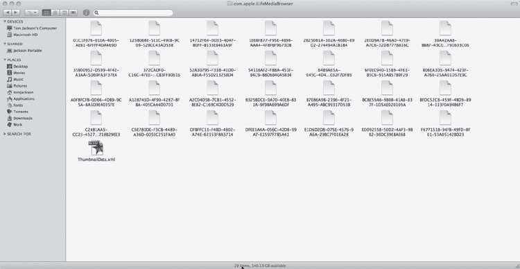
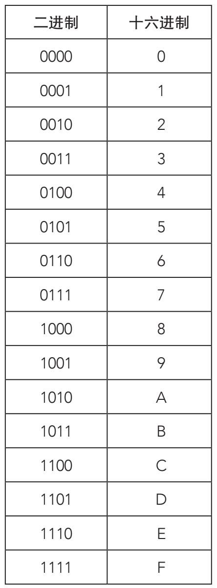
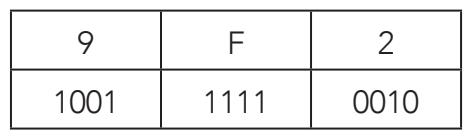
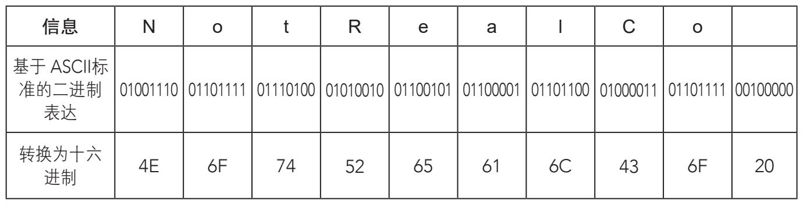
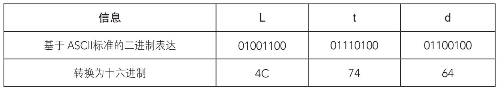

十六进制是计算机使用的另外一种常用编码。它是一种数字系统，使用16个特殊的数位，因此叫十六进制，区别于常用的十进制系统。可以说十六进制是仅次于二进制的第二大计算机语言。为何是16数位系统呢？还记得计算机的基本运算单位吧，也就是字节，由8比特组成，0和1最多产生28=256种不同的组合。但是28=24×24=16×16，也就是说，两个十六进制数字加起来等于一个字节。
十六进制中的16个数位由传统的0、1、2、3、4、5、6、7、8、9和六个规定好的大写字母——A、B、C、D、E、F组成。用十六进制表示时，如下所示：
从0到15：0、1、2、3、4、5、6、7、8、9、A、B、C、D、E、F。
从16到31：10、11、12、13、14、15、16、17、18、19、1A、1B、1C、1D、1E、1F。
32以后：20、21、22、23、24、25、26、27、28、29、2A、2B、2C……

这些文件都是计算机自动生成的，文件的名字看似奇怪，其实都是十六进制数字。
十六进制数字的字母大小写没有区别（1E与1e相同）。下表是前16个二进制数字和它们对应的十六进制数字：

想要从二进制向十六进制转换，我们需要从右起把所有“比特”（位）分为四个一组，根据上面的表格完成转换。如果二进制数字的位数不是4的倍数，就在左侧补充0。从十六进制向二进制转换时，我们把每个十六进制数字转换为对应的二进制数字。请看下面的例子：
9F216是十六进制数字（下标“16”表明这个数字是十六进制数字）的形式标志。记住它们对应的二进制数字是：

因此9F216=1001111100102（下标“2”表明这个数字是二进制数字）。
现在我们把过程反过来：11101001102有十个数位。四个数位一组，最后需要在左侧补充两个0，成为12个数位。
转换为：
11101001102=0011 1010 01102=3A616
十六进制字符与ASCII码之间是什么关系呢？每个ASCII码都包括8比特（1字节）的信息，所以5个ASCII字符包含40比特（5字节），而且因为十六进制包含4比特，所以可以说5个ASCII字符就是10个十六进制字符。


举个例子，我们把一个词语用十六进制编码。以名称“NotRealCo Ltd”（非真实有限公司）为例，步骤如下：
1.用标准ASCII码把“NotRealCo Ltd”译为二进制数字。
2.将数字分为四个一组，如果数位的长度不是4的倍数，在左侧补0。
3.参照二进制和十六进制转换表，继续译。
因此，短语“NotRealCo Ltd”用十六进制编码后为：
4E 6F 74 52 65 61 6C 43 6F 20 4C 74 64